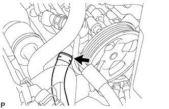
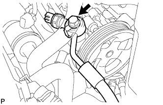

2UZ-FE VANE PUMP > REMOVAL |
| 1. DISCONNECT CABLE FROM NEGATIVE BATTERY TERMINAL |
| 2. REMOVE V-BANK COVER SUB-ASSEMBLY |
 |
Remove the 2 nuts and V-bank cover.
| 3. REMOVE AIR CLEANER HOSE ASSEMBLY |
 |
Disconnect the vacuum transmitting hose and No. 2 ventilation hose.
Loosen the 2 hose clamps.
Remove the air cleaner hose.
| 4. REMOVE AIR CLEANER ASSEMBLY |
 |
Disconnect the clamp and MAF connector.
Remove the 3 bolts and air cleaner.
| 5. REMOVE FAN AND GENERATOR V BELT |
 |
Loosen the belt tension by turning the belt tensioner counterclockwise, and then remove the fan and generator V belt.
| 6. DRAIN POWER STEERING FLUID |
| 7. DISCONNECT NO. 1 OIL RESERVOIR TO PUMP HOSE |
 |
Slide the clip and disconnect the hose from the vane pump.
| 8. DISCONNECT POWER STEERING OIL PRESSURE SWITCH CONNECTOR |
 |
Disconnect the connector.
| 9. DISCONNECT PRESSURE FEED TUBE |
 |
Remove the union bolt and disconnect the pressure feed tube.
Remove the gasket.
| 10. REMOVE VANE PUMP ASSEMBLY |
 |
Remove the 2 bolts, nut and vane pump.